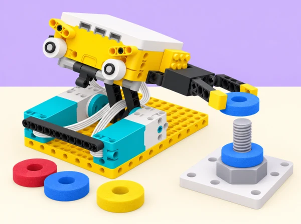

Eines per a una missió de servei espacial
🏷️ Exploració i enginyeria espacial
🌱 Situació, repte i intenció
El repte adapta Astronaut Tools: comparar què demana una tasca extravehicular (EVA) respecte d’una eina terrestre i dissenyar pensant en el client, les seues mans amb guants i la visibilitat limitada. NASA descriu que les persones en caminada espacial s’estabilitzen amb passamans i que els objectes de treball s’ancoren perquè no s’allunyen; consulteu-ne la fitxa educativa de què és una caminada espacial.
El nostre tauler no simula la microgravetat: és una maqueta fixa per investigar la forma, el control i la transmissió de força. Tampoc demanem a l’alumnat que es pose casc o que limite la vista; traduïm les restriccions en criteris de disseny i targetes de prova.
🎯 Repte i criteris d’èxit
Trieu una de tres tasques: traslladar una femella gran d’escuma d’un pern ample a un altre; guiar un cable tou entre dues guies; o girar lentament una femella de cartó fixada a un suport. Dissenyeu una pinça, selector o girador que puga completar la tasca sense colps i amb un control clar.
- La peça de prova queda controlada durant el trasllat, sense eixir del tauler.
- Una altra parella pot identificar l’entrada, el moviment i la manera d’aturar el mecanisme.
- La relació d’engranatges triada es justifica amb dades de velocitat, càrrega i èxit.
- La prova és repetible en la maqueta i no s’extrapola a una operació espacial real.
- La idea d’interfície té en compte l’adherència ampla i un contrast visual clar sense obligar ningú a restringir la vista o el moviment.
🎯 Aprenentatges i vocabulari
- Analitzar una tasca simulada i definir requisits d’una eina per a una persona amb guants.
- Comparar agafadors i guies de cable amb criteris de control, abast i facilitat d’ús.
- Construir una maqueta segura i provar-la amb peces lleugeres i moviments lents.
- Iterar el disseny a partir d’observacions i distingir una simulació d’una eina apta per a ús real.
🧰 Materials i preparació
SPIKE Prime 45678: hub, un motor, bigues, eixos, engranatges, sensor de color o de distància si està disponible; peces grans de cartó/escuma, perns amples de maqueta, volanderes d’escuma, cable tou, clips de retenció, cinta de paper, targetes, regla i graella de registre. No es necessita cap sensor de força extern ni cap expansió 45681.
Prepareu taulers amb perns ben fixats i objectes lleugers que no puguen rodar fora de la taula. Reviseu connexions i programa, limiteu velocitat i força i manteniu lliure la zona mòbil. Feu grups amb rols rotatius de disseny, construcció, codi, observació i registre. Si falta dispositiu, la mateixa comparació es pot fer manualment, però marqueu l’evidència com a maqueta sense automatització.
📅 Seqüència didàctica
Entenem la tasca i el context
Fase 1 · Activem i prediem
Consulteu el mapa públic del Parc Natural i marqueu la zona valenciana que inspira la missió fictícia. Abans de llegir la fitxa, anoteu què penseu que pot necessitar una eina per retindre una peça en un entorn de treball diferent del terrestre.
Fase 2 · Explorem i construïm
Compareu imatges o esquemes de l’espai amb una eina terrestre i distingiu fets que provenen d’una font de les hipòtesis del disseny. Llegiu una fitxa sobre les EVA: algunes eines necessiten ancoratges i els passamans ajuden la tripulació a estabilitzar-se. Representeu la idea amb un clip ample o una safata que reté una peça; la maqueta no recrea la física orbital.
Fase 3 · Expliquem i registrem
En equip, seleccioneu una tasca i descriviu la persona usuària fictícia. Completeu «necessitat / limitació / criteri de disseny / prova possible» i indiqueu què està documentat i què és una decisió de disseny.
Fase 4 · Apliquem i millorem
Dibuixeu què canviaria respecte d’una eina quotidiana: grandària i forma del mànec, contrast de la peça, visibilitat de l’acció i manera de retindre-la. Reviseu si cada criteri es pot comprovar amb una prova de taula segura.
Fase 5 · Comprovem i reflexionem
Dissenyem i comparem agafadors
Fase 1 · Activem i prediem
Esbosseu dues eines: una pinça de dues peces mòbils i una cullera o guia fixa que evita agafar la peça. Predigueu quina pot retindre millor una peça gran d’escuma sense danyar-la.
Fase 2 · Explorem i construïm
Assenyaleu en cada esquema l’eix, el punt d’agafada, la superfície de contacte i el límit de tancament. Construïu una versió manual amb cartó o peces SPIKE, sense motor, i proveu-la amb peces grans d’escuma per comprovar la geometria abans de programar.
Fase 3 · Expliquem i registrem
Compareu un mànec estret amb un de més ample mitjançant plantilles. Registreu mida de presa, separació dels controls, contrast i facilitat de col·locació de la peça. Treballar amb guants és un requisit de disseny a considerar, no una experiència física que cal imitar.
Fase 4 · Apliquem i millorem
Seleccioneu el disseny que millor s’ajusta a la tasca i justifiqueu la decisió amb els criteris. Com a ampliació, doneu el dibuix a un altre equip perquè comprove si entén on col·locar la peça sense instruccions addicionals.
Fase 5 · Comprovem i reflexionem
Transmetem el moviment i provem engranatges
Fase 1 · Activem i prediem
Abans de construir, predigueu què passarà amb la velocitat i el moviment de la peça si useu una reducció d’engranatges o una configuració que augmente la velocitat.
Fase 2 · Explorem i construïm
Construiu l’eina amb hub, motor gran o mitjà, bigues i una unió mòbil. Manteniu la base estable i el recorregut curt; no bloquegeu l’eix.
Fase 3 · Expliquem i registrem
Proveu una reducció i una configuració més ràpida amb la mateixa peça i recorregut. Feu tres execucions per configuració i registreu temps, trasllats reeixits, relliscades i si la base s’alça o gira.
Fase 4 · Apliquem i millorem
Useu les dades per explicar el compromís: una reducció acostuma a donar més parell i menys velocitat a l’eix de sortida; augmentar la velocitat redueix el parell disponible segons la relació de transmissió. Si la pinça no tanca de manera controlada, pareu i reviseu el topall o el programa. Com a ampliació, repetiu amb un braç més llarg i observeu l’abast i l’estabilitat.
Fase 5 · Comprovem i reflexionem
Afegim una entrada i comparem sensors
Fase 1 · Activem i prediem
Prepareu una targeta amb una marca de color ampla i prediu quina entrada podrà detectar cada sensor: etiqueta preparada amb color o proximitat d’un bloc gran.
Fase 2 · Explorem i construïm
Configureu el sensor de color perquè seleccione una acció acordada i el sensor de distància perquè active una resposta quan el bloc arriba a una zona marcada. Manteniu un control manual alternatiu per a cada prova.
Fase 3 · Expliquem i registrem
Prepareu tres targetes i dues distàncies. Registreu activacions correctes i falses, l’angle i la il·luminació. El sensor de color llig l’etiqueta preparada; no identifica material, tipus de femella ni duresa.
Fase 4 · Apliquem i millorem
Com a variant de l’exemple oficial del martell amb detecció de moviment, substituïu qualsevol impacte per una pressió lenta sobre una peça d’escuma. Useu el gest del hub només si es pot fer amb control. Compareu la llegibilitat i previsibilitat d’aquesta entrada amb el botó manual; no colpegeu objectes ni persones.
Fase 5 · Comprovem i reflexionem
Iterem i fem el lliurament de missió
Fase 1 · Activem i prediem
Reviseu la taula de proves i trieu una sola millora: ampliar el mànec, canviar el límit de tancament, reduir velocitat o afegir una guia per al cable. Predigueu quin criteri hauria de millorar.
Fase 2 · Explorem i construïm
Canvieu una cosa cada vegada i repetiu la tasca tres voltes amb les mateixes condicions. Registreu els resultats abans i després del canvi.
Fase 3 · Expliquem i registrem
Prepareu una fitxa de lliurament: missió, objecte que manipula, components SPIKE, passos d’ús, límit conegut i alternativa manual. Indiqueu quina prova avala cada afirmació.
Fase 4 · Apliquem i millorem
Una altra parella executa la seqüència amb una targeta i una llista de comprovació, sense instruccions orals addicionals. Com a extensió, podeu demanar a una eina d’IA autoritzada variants de forma basades en criteris escrits; contrasteu-les amb les peces i les proves, i anoteu-ne l’ús. La IA no pilota ni controla el robot.
Fase 5 · Comprovem i reflexionem
🧪 Evidències i avaluació
Recolliu mapa/context, targeta de missió, esbossos, criteris, esquema de transmissió, programa, registre de sis o més proves, decisions d’iteració i instruccions finals. La rúbrica formativa observa si l’equip:
- distingeix el context documentat de l’escenari fictici;
- relaciona engranatges amb velocitat/parell sense prometre un resultat universal;
- selecciona una entrada que pot justificar i ha provat amb casos diferents;
- manté la peça dins del tauler i atura el mecanisme abans de modificar-lo;
- explica una limitació i proposa una prova posterior concreta;
- escriu instruccions que una altra parella pot seguir.
Autoavaluació: «La dada que m’ha fet canviar el mecanisme és…», «el sensor que he triat només em permet inferir…» i «per a usar aquesta eina en una missió real encara caldria…». El feedback parla de la qualitat del disseny, no de la destresa física de les persones.
♿ Participació, accessibilitat i seguretat
No fem simulacions de discapacitat ni posem cascos opacs o guants grossos com a prova obligatòria. Convertim els requisits en decisions de disseny, oferim mànecs alternatius, controls amplis, targetes visuals i rols de participació diversos. Ningú està obligat a provar físicament l’eina. Atureu el programa i desconnecteu el hub abans d’ajustar engranatges; manteniu els dits fora de la pinça i useu només càrregues grans, lleugeres i de baixa velocitat.
La maqueta terrestre no reprodueix microgravetat, tracció ni una EVA. El prototip no és una eina espacial operativa ni una pinça per a ús corporal. Un sensor de distància/color no reconeix persones o materials; la prova només verifica els estímuls preparats a classe.
🔗 Referents i adaptació
Partim del SPIKE Activity Brief: Astronaut Tools i el seu exemple de codi per al Motion Sensing Hammer. S’hi conserven traslladar femelles entre perns o encaminar cables, pensar les diferències d’eines de l’espai i de la Terra, dissenyar per a guants i visibilitat, els tres conceptes de martell/selector/desmuntatge, reducció i augment d’engranatges, activació per sensors, velocitat segons la peça i exploració d’IA. Les propostes per al martell es tradueixen a pressió lenta sense impacte;
les peces, guies, proves, itinerari de cinc sessions i il·lustració són propis. L’exemple de codi pertany a SPIKE Legacy: comproveu la versió de l’app i manteniu blocs com a alternativa completa.
Per contextualitzar els requisits d’una EVA, consulteu la fitxa educativa de la NASA enllaçada en la situació, que descriu guants, passamans i subjecció d’eines. La font local és el Parc Natural de l’Albufera (Generalitat Valenciana); l’ús com a escenari de missió és imaginari.